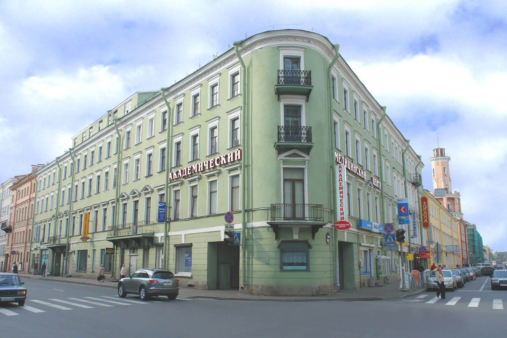
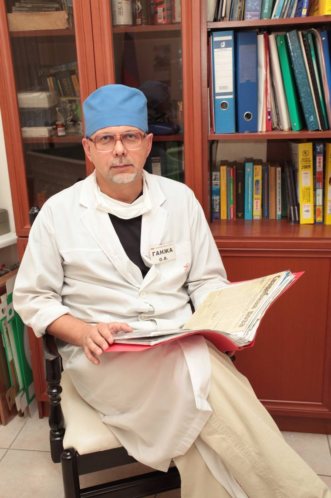

Опыт, накопленный десятилетиями
За тридцать лет через центр прошли тысячи людей с самыми разными историями. Это значит, что вашу ситуацию здесь, скорее всего, уже видели, и знают, с чего начинать.
Академический Медицинский Центр вырос из отделения неврозов Военно-Медицинской Академии и с 1992 года помогает людям выходить из зависимости. За это время у нас лечились пациенты из России, СНГ, Европы, Азии, Америки и Австралии.
Группа врачей и учёных пришла к мысли, что городу нужен центр, который соединит три вещи сразу: клиническую практику, обучение специалистов и собственные исследования. Тогда такие центры были редкостью: лечение, наука и преподавание существовали отдельно друг от друга.
Понадобились годы на то, чтобы собрать финансирование, разработать концепцию и построить клинику. Академический Медицинский Центр открылся и довольно быстро стал одним из заметных медицинских учреждений города.
С самого начала центр работал по принципу, который сохранился до сих пор: пациента ведёт не один специалист, а команда. Психиатр-нарколог, психотерапевт, невролог и терапевт видят одного и того же человека с разных сторон, и лечение складывается из всех этих взглядов.

Ведущий психиатр-нарколог и психотерапевт, создатель центра

С ранних лет он интересовался медициной. После медицинского факультета продолжил обучение в аспирантуре и защитил диссертацию. Профессиональная карьера началась в одной из ведущих больниц страны, где он работал и как врач, и как исследователь.
Увидев, что городу нужно учреждение, объединяющее клиническую практику и научную работу, Олег Владимирович возглавил команду, работавшую над созданием Академического Медицинского Центра. Его знания, опыт и умение вести за собой людей сыграли в этом ключевую роль.
Под его руководством центр стал предлагать современные методы диагностики и лечения, участвовать в исследованиях и разработке новых методик. Сегодня Олег Владимирович продолжает вести пациентов лично: более тридцати лет клинической практики.
Запись из архива клиники
За тридцать лет через центр прошли тысячи людей с самыми разными историями. Это значит, что вашу ситуацию здесь, скорее всего, уже видели, и знают, с чего начинать.
Зависимость редко приходит одна: рядом с ней бывают бессонница, тревога, проблемы с сердцем и печенью. Поэтому пациента ведут сразу несколько специалистов.
Центр вырос из академической среды и сохранил с ней связь. Методики не берутся со стороны: их изучают, проверяют и обсуждают внутри.
Консультация и анализы в день обращения бесплатно. Анонимно, круглосуточно, с выездом на дом.
Оставьте номер телефона, врач свяжется с вами. Обращение полностью анонимно.